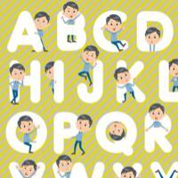

雅思Part1：商务礼仪
收藏：11 | 出错率：15%
价格：1积分

雅思Part2：地点与自然
收藏：15 | 出错率：48%
价格：0积分
雅思Part3：开口说英语
收藏：58 | 出错率：23%
价格：2积分
雅思Part4：日常生活
收藏：23 | 出错率：39%
价格：0积分
雅思Part5：学会表达自己
收藏：25 | 出错率：19%
价格：3积分
雅思Part6：文化科技
收藏：29 | 出错率：24%
价格：1积分
雅思Part7：建筑
收藏：11 | 出错率：28%
价格：0积分
雅思Part8：课外生活
收藏：28 | 出错率：36%
价格：0积分
雅思Part9：校园生活
收藏：30 | 出错率：17%
价格：2积分
雅思Part10：旅行日记
收藏：45 | 出错率：29%
价格：1积分